Advance Tutorial: Splitbody Animation
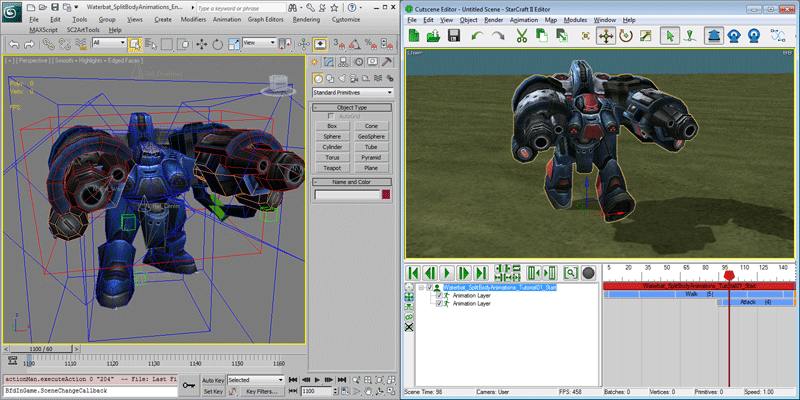The StarCraft II animation system has the capability to play different animation on different tracks of a model at the same time. For instance, a "Walk" animation can be played on the rotation tracks of the body and legs while the arms can be playing an 'Attack' animation. This is called 'Splitbody Animation'. To demonstrate this type of animation, we will change the 'Walk' animation of the Waterbat into a Splitbody Animation so that it could walk with his arms in the attack position.
Getting Started
-
Open 'Waterbat_SplitBodyAnimations_Tutorial01_Start.max'. It contains the Waterbat with the 'Walk' and 'Attack' animations needed for this tutorial.
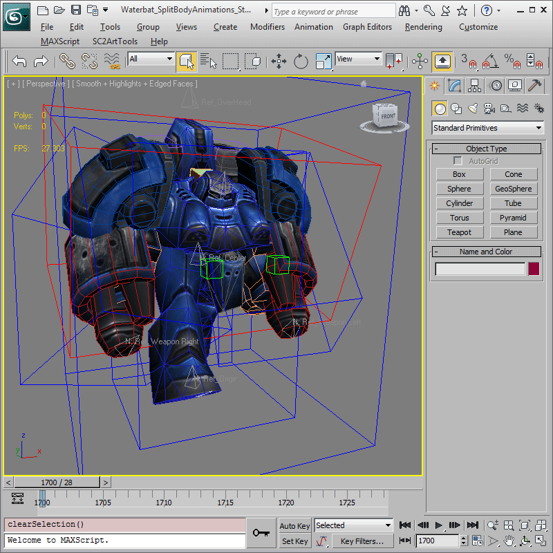 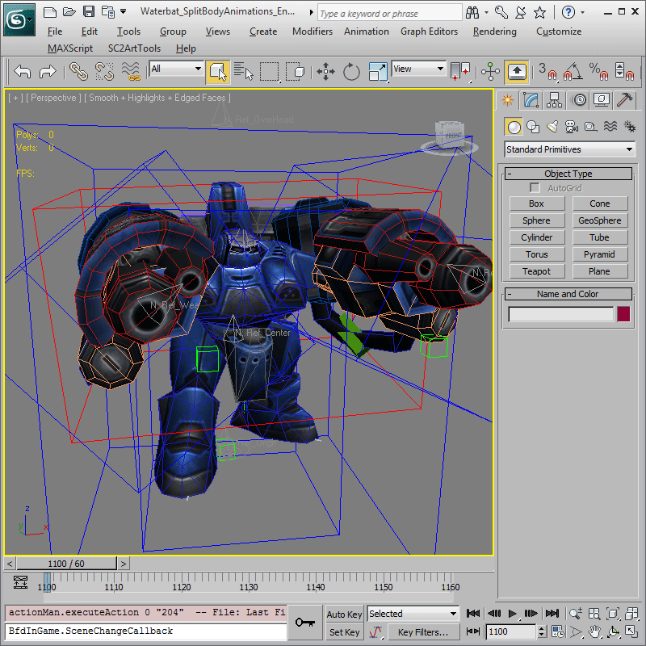
Create a Track Set
The first thing we are going to do is create a Track Set which is basically a collection of tracks which can be assigned to any number of animations. By default, every track is considered to be in a 'Default Track Set' that is assigned to every animation. We will make a new track set using the "Track Sets Editor".
-
Open the Anim Props Floater, and press the 'Open Track Sets Editor' button to open the Track Sets Editor.
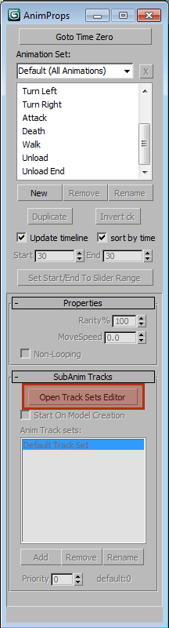 -
In the Track Sets Editor floater that opens, press the 'Add a Track Set' button and name the newly created track set to 'LowerBody'.
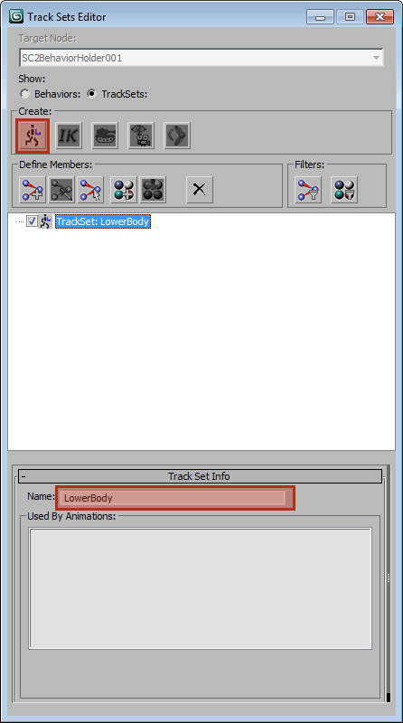 -
Select all the lower body bones as shown. With the "LowerBody" track set still selected, press the 'Add Bones From Viewport Selection' button. A '+' button should now be available next the "LowerBody" track set, and pressing it expands the list of bones that have been assigned to it.
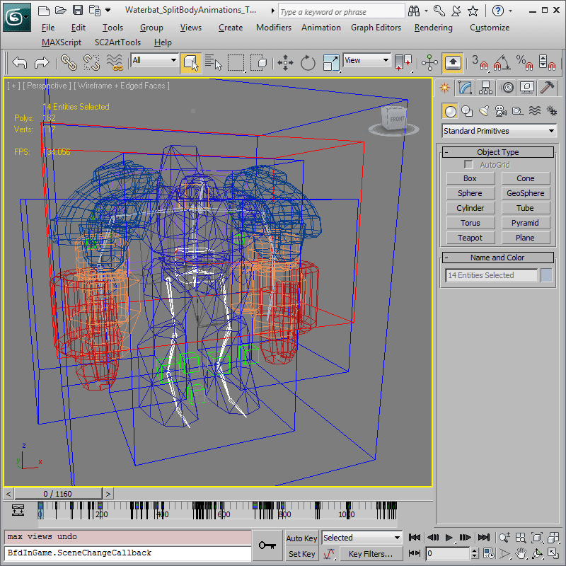 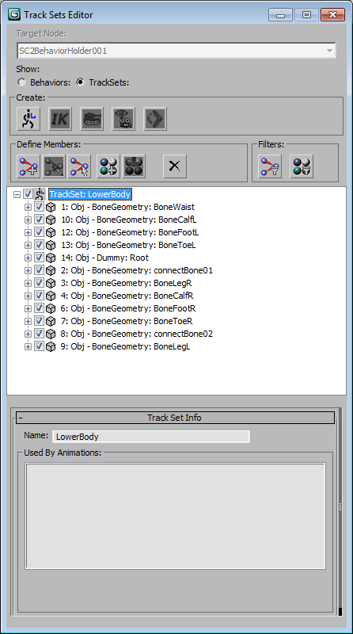
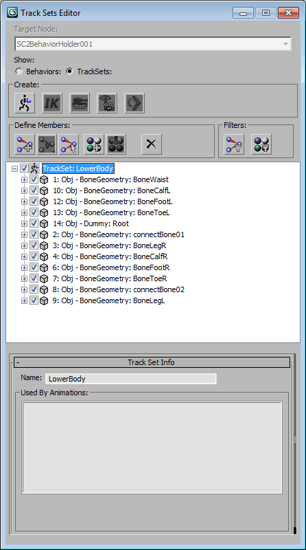
-
Likewise, clicking the '+' buttons next to the assigned bones should show animatable tracks available for each of them. Since we only need the "position" and "rotation" track for the Root, uncheck the "scale" track for it. For all other bones, uncheck everything other than "rotation".
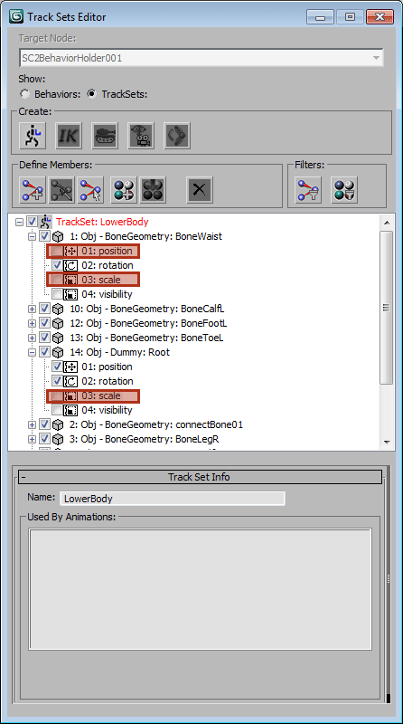
Assigning Track Set to Animation
-
Now that we have the 'LowerBody' track set, we will need to assign it to the 'Walk' animation. In the Anim Props Floater, Select 'Walk' from the animation list, then press the Add button on the SubAnim Tracks rollout. In the pop-up that appears, select the 'LowerBody' track set from the combo-box, then click 'OK'. The 'LowerBody' track set should now be on the 'Anim Track Set' list for the 'Walk' animation.
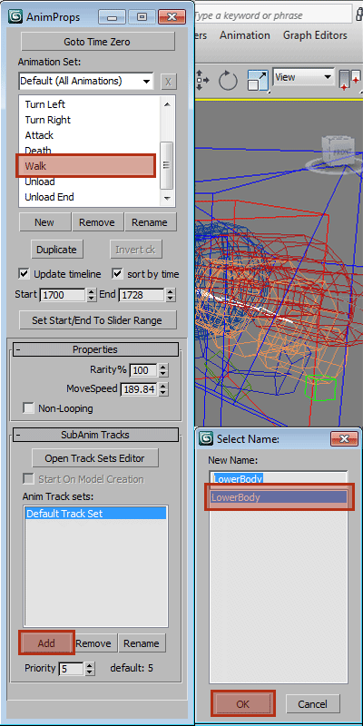 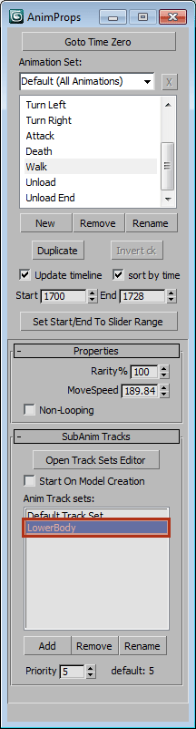 -
Use 'SC2ArtTools > Export > Preview' and launch the Cutscene Editor to preview the file. The Waterbat appears in the Cutscene Editor playing its "Stand" animation. In order to play the 'Attack' animation simultaneously with the 'Walk' animation, they need to be played in two different animation layers. First, change the "Stand" animation to 'Walk'. Then, right-Click on the Waterbat in the list and choose "Add Animation Layer" from the pop-up menu to create a new layer. Change the animation of the second layer to 'Attack' and drag the beginning of the 'Attack' animation block to the right so that it starts later. We want the Waterbat to start walking first and then lift his arms to attack.
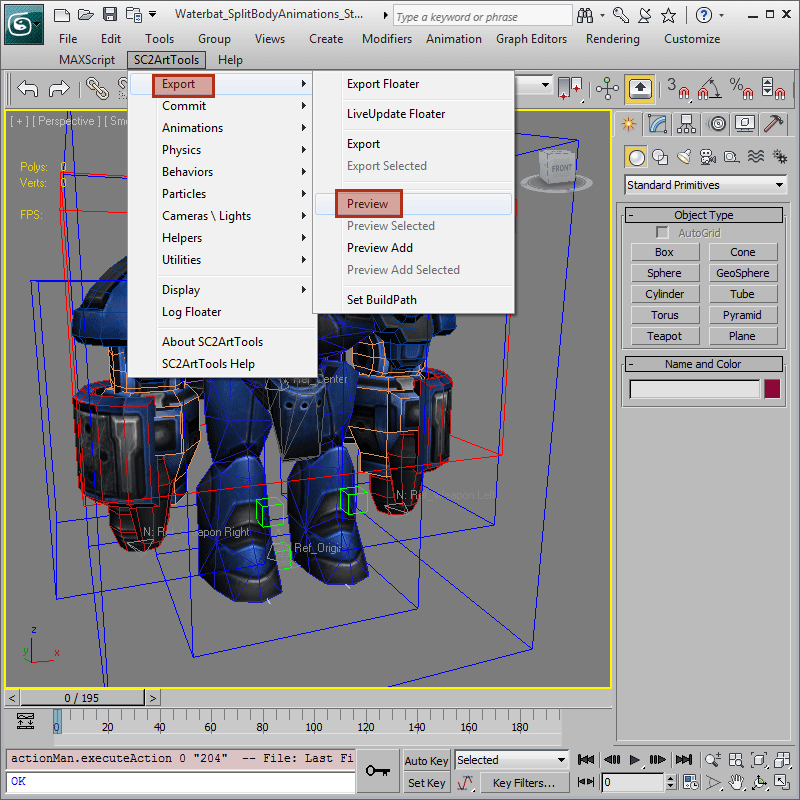 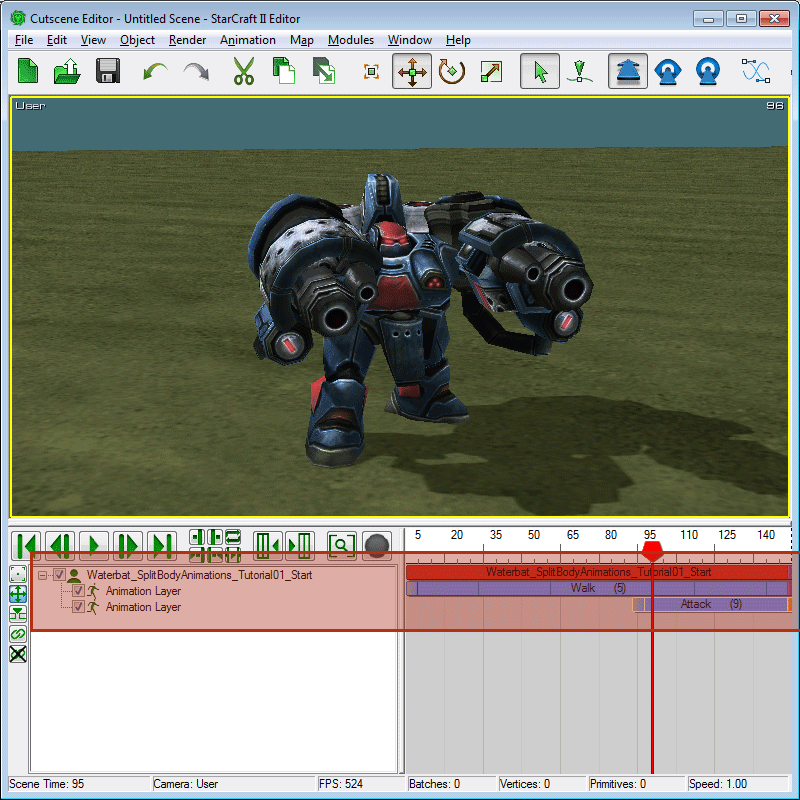
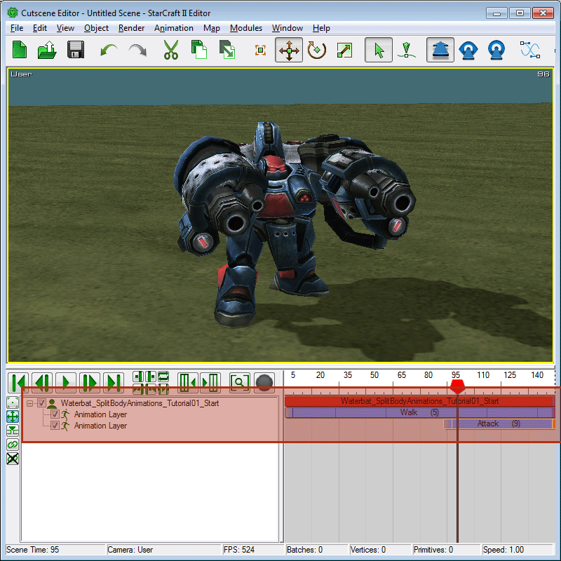
-
Press Play in the Cutscene Editor. The Waterbat starts out walking but when the timeline gets to the 'Attack' block, his entire body switches to the 'Attack' animation which isn't what we want. Instead, we want the rest of his body besides the arms to continue playing 'Walk'. To do that, we need to assign Animation Track Priorities to the track sets.
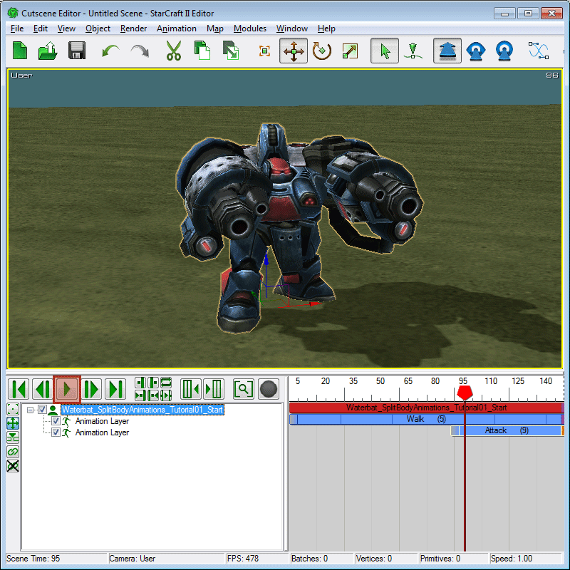
Animation Track Priority
-
When multiple animations are played at the same time, each track would playback the animation it has the highest priority in. The animation priority for a given animation can be found on an animation block as a number in parenthesis. In this case, the 'Walk' animation block shows a priority of (5) while 'Attack' has priority of (9) which is why every track in the 'Attack' animation is overwriting the 'Walk' tracks. Note that, these are the default priority assigned to each animation by name. A list of default animation priorities can be found on the Animation Priorities Appendix.
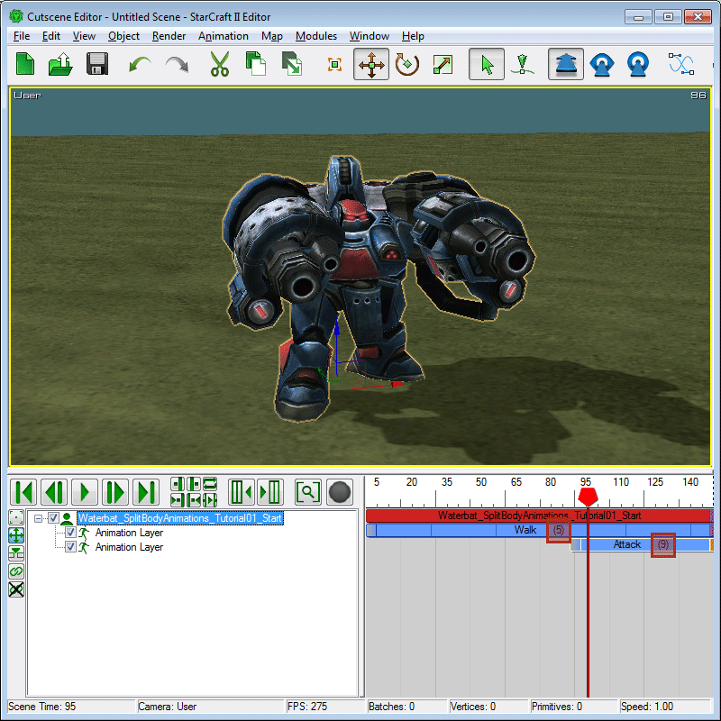 -
In order for the tracks of the lower body to play 'Walk' instead of 'Attack', their priority while playing 'Walk' needs to be changed to higher than for 'Attack' which is (9). This can be done by altering the priority of the 'LowerBody' track set for the 'Walk' animation. In the Anim Props Floater, make sure the 'Walk' animation and 'LowerBody' track set are selected, then set the priority to '10'.
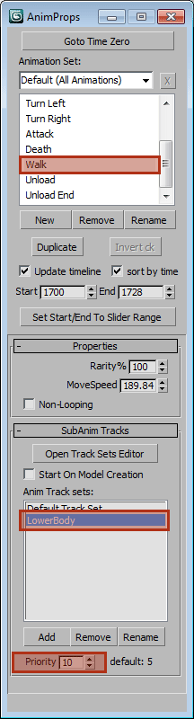 -
Let's check our work again. This time, instead of using 'Preview', invoke 'SC2ArtTools > Export > Preview Add' which would update the Cutscene Editor without resetting it. This way, we can reuse the animation layers we have already setup.
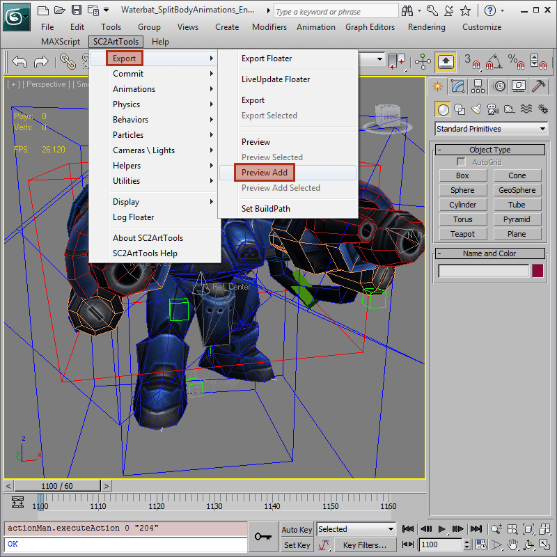 -
Once the Cutscene Editor is updated, the Waterbat should now be walking with his arms pointing forward in the attack pose when the timeline reaches the 'Attack' animation block.
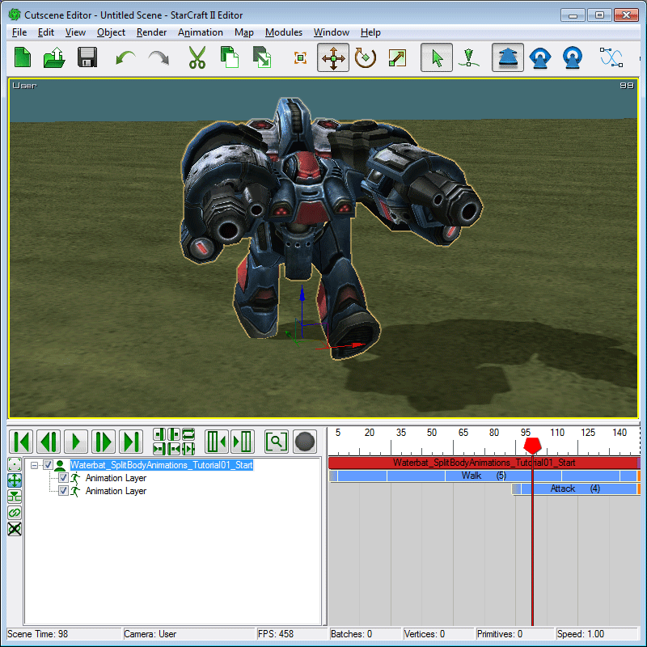